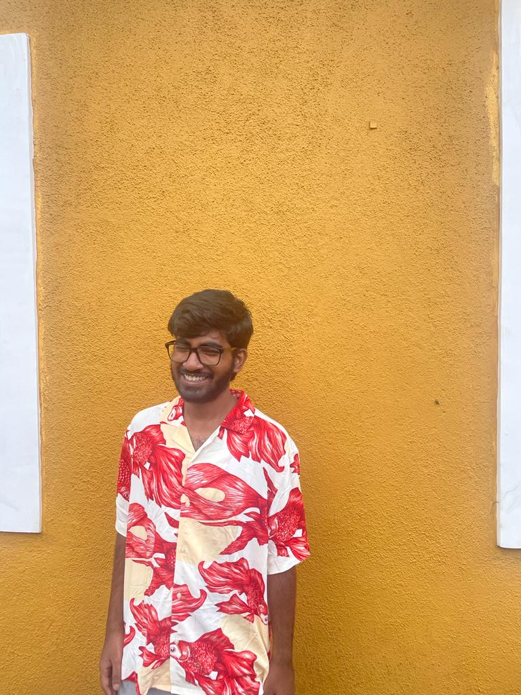

Breadcrumb

I’m currently in my 8th semester here at the Department of Physical Sciences, IISER Kolkata.
I’m mostly interested in Physics (as a Physics Major, this is to be expected). My particular areas of interest are applications of Quantum Mechanics in Condensed Matter. I don’t know much yet, but I’m trying to learn and explore more. I enjoy writing simulations a lot! It is always so nice to see a theory play out in front of your once you translate it into an algorithm. I love experiments, looking at mundane things around me that require challenging physics to explain, and labelling BNC cables ;)
I used to really enjoy tinkering with electronics - mostly Arduino and stuff. Most of that hobby has withered away - but I can’t say that I don’t enjoy watching a nice Ben Eater video now and then. I’m always down to discuss a nice circuit.
I enjoy quizzing and watching movies, the only two activities that I (used to, as of 2026) engage in here at IISER-K. I occasionally make quiz sets, which I upload here. I (used to) maintain the IISER Kolkata Movie Club website, where we (used to) publish reviews, movie-lists, etc. submitted by the students here. I also enjoy listening to music a fair bit… I try to listen to everything that people (and algorithms) send my way. I haven’t yet mustered up the courage to express my views on the stuff I listen to, but someday I will.
I find reading and discussing Philosophy fun - so I often get together with a few like-minded friends to do so. If you are interested in Philosophy but don’t know where to start - here you go (Site by one of the people who got me invested in this in my 1st year).
I am a very opinionated Linux user - feel free to discuss Torvalds lore with me. Long Live Linus!